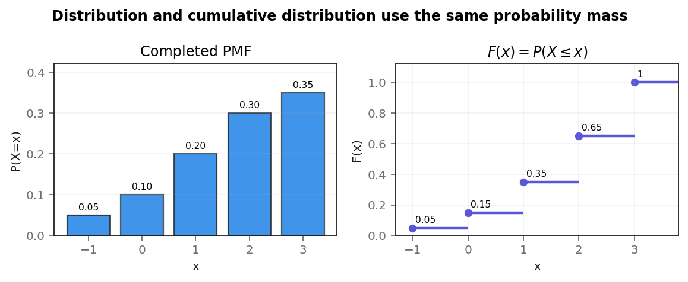

A discrete random variable $X$ has the probability distribution given in the table below, where $a$ and $b$ are constants.
$x$ −1 0 1 2 3 $P(X=x)$ 0.05 0.1 $a$ $b$ 0.35 Given that $E(X)=1.8$
(a) find the value of $a$ and the value of $b$ (3)
(b) Specify the cumulative distribution function $F(x)$ for $x=−1, 0, 1, 2$ and $3$ (2)
(c) Find $P(2X\lt1)$ (1)
(d) Find $Var(5−3X)$
You must show your working. (4)
Status: earlier parts accepted; part (d) was the main failed attempt and was corrected live.
[10 marks: (a)3, (b)2, (c)1, (d)4]
The strategy is to create one equation from total probability and one from the stated mean, then solve the simultaneous pair. Keep the $x=-1$ contribution negative in the expectation equation.
A probability distribution sums to one, while $E(X)=\sum xP(X=x)$. The two unknown masses require these two independent conditions.
Use $\sum P(X=x)=1$ and $\sum xP(X=x)=1.8$. Both are definitions, so they precede substitution.
The lesson evidence treats the earlier parts as accepted. A neutral trap is equating the unweighted average of the five $x$ values to 1.8; expectation must use probability weights.
The two equations play different roles: the mass equation fixes how much probability remains after 0.05, 0.10 and 0.35, while the expectation equation locates that remaining mass across outcomes 1 and 2. Writing the fixed contribution $(-1)(0.05)+3(0.35)=1.00$ exposes the sign before elimination. The target pair must satisfy both constraints simultaneously; satisfying only $a+b=0.50$ leaves infinitely many possible distributions.
The simultaneous constraints stop at a=0.20 and b=0.30. Transfer by pairing total mass with the supplied moment, preserving signed support coefficients and substituting the solution back into both original equations.
Total probability gives $0.05+0.10+a+b+0.35=1$, hence $a+b=0.50$. Expectation gives $(-1)(0.05)+a+2b+3(0.35)=1.8$, so $-0.05+a+2b+1.05=1.8$ and $a+2b=0.80$. Subtracting the first equation yields $b=0.30$, then $a=0.20$. Thus $\boxed{a=0.20,\ b=0.30}$.
Solve the two constraints by elimination only after writing every fixed contribution. The difficult transition is the negative product at x=−1: it contributes −0.05 to the expectation while still contributing +0.05 to total mass. Earlier parts were accepted, so there is no evidenced student error here; a sign slip is a neutral diagnostic. Check the proposed masses in the original table: all are non-negative, total mass is one, and the weighted products sum to 1.80. The answer stops at a=0.20 and b=0.30. Transfer to another unknown-PMF problem by pairing the universal mass equation with the supplied moment equation, preserving support values as coefficients and verifying both original constraints after solving.
A useful independent reconstruction is to insert $a=0.20$ and $b=0.30$ into the original table, not merely into the simplified equations. The probabilities then total one and the weighted products total 1.80. This double substitution distinguishes a genuine solution from an elimination slip. In a related exam item with unknown masses at different $x$ values, the coefficients in the expectation equation must change with those support values even though the mass equation still uses coefficient one.
Accumulate probability from left to right and pair each supported $x$ with $F(x)=P(X\leq x)$. Present the results as a table so values cannot be shifted to the wrong endpoint.
A discrete CDF includes all probability at and below the argument. Each step adds the next PMF mass; it does not repeat a single probability.
Use $F(x)=P(X\leq x)=\sum_{t\leq x}P(X=t)$. The inclusive inequality is essential at jump points.
The lesson included a presentation tip to use a table; no numerical learner error is evidenced here. A neutral trap is listing PMF values instead of cumulative totals.
The endpoint labels control every cumulative entry: at $x=-1$ include one mass; at 0 include two; at 1 include three; at 2 include four; and at 3 include all five. This gives a transparent transition from the completed PMF to $0.05,0.15,0.35,0.65,1$. Treating the row as successive additions also shows why a CDF can never decrease as $x$ moves right.
The cumulative endpoint row is 0.05, 0.15, 0.35, 0.65, 1. Transfer by building inclusive running totals, checking monotonicity and final mass, then differencing adjacent entries to reconstruct the PMF.
Starting at $-1$, $F(-1)=0.05$. Then $F(0)=0.05+0.10=0.15$; $F(1)=0.15+0.20=0.35$; $F(2)=0.35+0.30=0.65$; $F(3)=0.65+0.35=1$. Therefore the row is $\boxed{0.05,0.15,0.35,0.65,1}$ at $x=-1,0,1,2,3$ respectively.

Form running totals at the exact listed endpoints, including each endpoint’s own mass. The difficult transition is the inclusive ≤ in F(x): at x=1 the 0.20 mass has already entered, so F(1)=0.35 rather than 0.15. No numerical error is evidenced in the lesson; the table layout was a presentation aid, so a shifted-column diagnosis must remain hypothetical. Check monotonicity, the final value one, and reverse differences 0.05, 0.10, 0.20, 0.30, 0.35 against the PMF. Stop with 0.05, 0.15, 0.35, 0.65, 1 aligned to −1,0,1,2,3. Transfer by building a running-total column and then differencing it back to the original masses.
Recovering the original distribution by differences is the strongest check here: $0.15-0.05=0.10$, $0.35-0.15=0.20$, $0.65-0.35=0.30$, and $1-0.65=0.35$. The first cumulative value itself supplies the missing initial difference 0.05. On another discrete CDF question, use the same reverse-difference test; an endpoint shifted one column will immediately produce the wrong recovered mass even if the final total remains one.
Solve the inequality for $X$, then use the discrete support to convert the strict bound into an inclusive event that can be read from the CDF.
Dividing by positive 2 preserves the inequality direction. Because $X$ only takes integers $-1,0,1,2,3$, values below 0.5 are exactly $-1$ and 0.
Use $2X\lt1\iff X\lt0.5\iff X\leq0$ on this support, followed by $F(0)=P(X\leq0)$.
The lesson evidence accepts this part, so only a neutral trap is noted. The parser-safe inequality uses MathJax commands and does not introduce raw HTML less-than markup.
Place the threshold 0.5 against the actual support before summing. The supported points to its left are exactly $-1$ and 0, so the event is neither $X\lt0$ nor $X\leq1$. This listing supplies the reasoning that a one-mark numerical answer can otherwise hide. It also explains why the earlier cumulative value $F(0)$ is the correct lookup rather than $F(1)$.
The support conversion stops at P(X≤0)=0.15. Transfer by solving the algebraic inequality first, listing qualifying atoms second, and using a CDF endpoint only after the strict real bound has been reconciled with discrete support.
Therefore $$P(2X\lt1)=P(X\lt0.5)=P(X\leq0)=P(X=-1)+P(X=0)=0.05+0.10=\boxed{0.15}.$$ This also equals the carry-in CDF value $F(0)$.
Divide by positive two, retain the strict bound X<0.5, and then interrogate the actual discrete support. The difficult transition is converting that real-number threshold to the supported event {−1,0}; zero qualifies even though the bound is strict. This part was accepted, so no learner error is supported; endpoint loss is only a neutral trap. Check each candidate directly: twice −1 and twice 0 are below one, while twice 1 already fails and all larger points fail. The calculation stops at 0.05+0.10=0.15, consistent with F(0). Transfer by listing supported values after algebra, especially when strict inequalities fall between adjacent atoms or when division by a negative would reverse direction.
The event check can be made point by point: $2(-1)=-2\lt1$ and $2(0)=0\lt1$, whereas $2(1)=2$ already fails, so every larger support value fails as well. Adding the two qualifying masses gives 0.15. For transfer, when division uses a negative coefficient, reverse the inequality first; here division by positive 2 preserves it, which is why the support conversion is the only delicate transition.
Compute the probability-weighted second moment, subtract the square of the mean, then apply the variance transformation rule. Show every weighted product and reserve rounding for the final answer.
Variance is spread about the mean, so probabilities weight squared outcomes. Adding 5 shifts every value equally and does not alter spread; multiplying by $-3$ scales variance by $(-3)^2=9$.
Use $E(X^2)=\sum x^2P(X=x)$, $Var(X)=E(X^2)-[E(X)]^2$, and $Var(aX+b)=a^2Var(X)$.
Direct lesson evidence shows the student divided the weighted squares by five and subtracted the unsquared mean, obtaining 1.2 then 10.8. The tutor corrected both points live. This specific diagnosis supports the completed-with-prompting status.
Lay out the second-moment row beside the PMF: the contributions at $x=-1,0,1,2,3$ are 0.05, 0, 0.20, 1.20 and 3.15. Their sum 4.60 is therefore a weighted square total, not a mean of five displayed numbers. Only after this line is secure should the supplied mean 1.8 be squared and subtracted. The sequence preserves both method marks and the source of each decimal.
The framed calculation stops at Var(5−3X)=12.24, reported as 12.2 to three significant figures. Transfer through the fixed chain weighted second moment, squared mean, then squared transformation coefficient, with a direct transformed-moment check.
First $$E(X^2)=1(0.05)+0+1(0.20)+4(0.30)+9(0.35)=0.05+0.20+1.20+3.15=4.60.$$ Then $$Var(X)=4.60-1.8^2=4.60-3.24=1.36.$$ Finally $$Var(5-3X)=(-3)^2(1.36)=9(1.36)=12.24=\boxed{12.2\text{ (3 s.f.)}}.$$
Lay out each squared-value contribution before subtracting the squared mean. The difficult transition is remembering that probabilities already form the averaging weights: dividing their weighted sum by five is invalid, and subtracting 1.8 instead of 1.8² is a separate error. Lesson evidence directly supports both slips and the tutor correction, but no broader variance weakness. Check through the transformed variable: E(5−3X)=−0.4 and E[(5−3X)²]=12.4 give 12.24 again. The required stopping point is 12.2 to three significant figures after 4.60−3.24=1.36 and multiplication by nine. Transfer by showing weighted second moment, squared mean, and squared scale factor as three distinct lines.
The transformed-variable cross-check is numerically diagnostic rather than decorative. Since $E(5-3X)=5-3(1.8)=-0.4$ and $E[(5-3X)^2]=25-30E(X)+9E(X^2)=25-54+41.4=12.4$, direct variance is $12.4-0.16=12.24$. Agreement with $9Var(X)$ confirms the coefficient is squared and the constant shift has no effect; three-significant-figure reporting then gives 12.2, never the stale unrelated value.